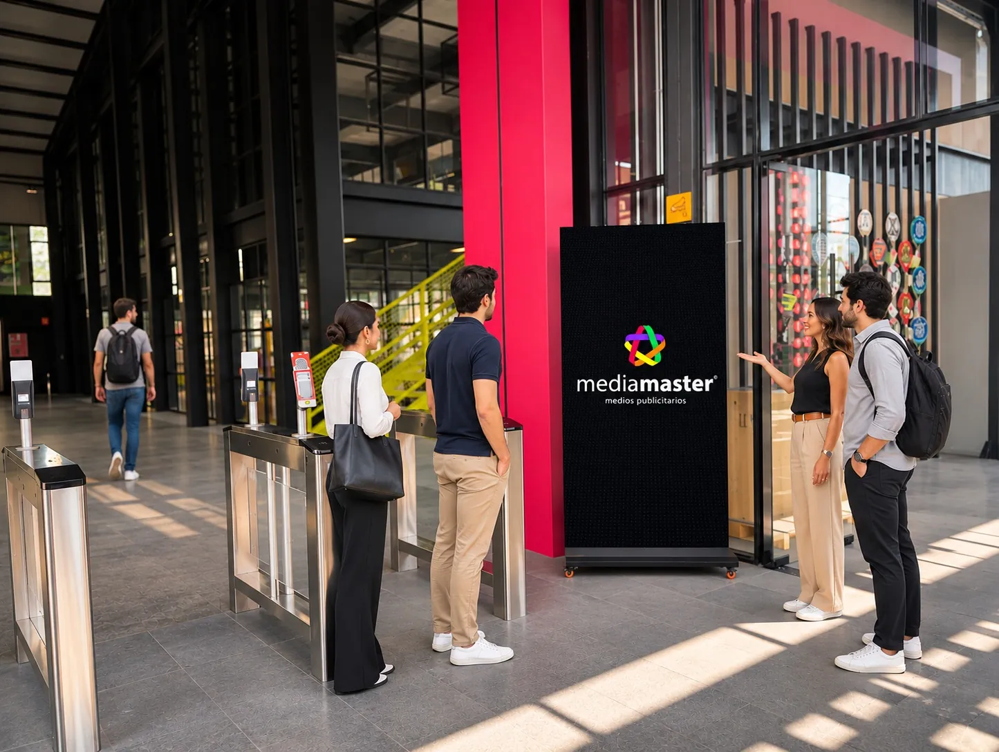

Tótems digitales en Querétaro
Pantallas verticales en ubicaciones premium: más cerca de tu cliente, más impacto para tu marca.
Más cerca. Más impacto.
En Mediamaster ofrecemos tótems digitales diseñados para maximizar la visibilidad de tu marca y captar la atención de miles de personas a diario, con un diseño vanguardista y costos accesibles que se ajustan a tu presupuesto.
Con más de 40 posiciones, nuestros tótems son el medio ideal para complementar cualquier campaña: brindan mayor penetración en el mercado meta, se ubican en segmentos premium o de alto nivel adquisitivo y ofrecen gran impacto visual por la iluminación, el movimiento y la cercanía al espectador.
- Permite publicar elementos para interactuar con la audiencia.
- Ideal para complementar campañas en pantallas y espectaculares.
Diseñados para retener miradas
Mira tu anuncio en un tótem
Sube tu diseño y velo al instante en nuestro tótem, en la calle y de frente. Tu archivo no se envía a ningún lado: solo se muestra en tu navegador.
 mediamasterMEDIOS PUBLICITARIOSmediamasterMEDIOS PUBLICITARIOS
mediamasterMEDIOS PUBLICITARIOSmediamasterMEDIOS PUBLICITARIOSUbicaciones de tótems en Querétaro
Descubre nuestras ubicaciones de tótems publicitarios en Querétaro y lleva tu negocio al siguiente nivel.
Conoce otros medios
Multiplica el impacto de tu campaña sumando formatos y ciudades.

Pantallas digitales
Pantallas LED de alta resolución en las principales avenidas de Querétaro.

Pantallas digitales
Pantallas LED en avenidas clave de Puebla con spots de 10 segundos.

Tótems
Pantallas verticales en zonas de alto nivel adquisitivo.

Espectaculares
Lonas de gran formato visibles 24/7 en avenidas de alto tráfico.

Espectaculares
Más de 100 ubicaciones para llegar a las personas correctas.

Aeropuerto AIQ
Miles de viajeros diarios en el Aeropuerto Internacional de Querétaro.

Aeropuerto AICM
4 megapantallas en uno de los aeropuertos con mayor tráfico del país.

Estadio La Corregidora
La pantalla gigante de 5 × 20 m frente a miles de aficionados.
Resolvemos tus dudas
¿Tienes otra pregunta? Escríbenos y un asesor te responde.
Escríbenos por WhatsApp¿Qué ventajas ofrecen los tótems digitales publicitarios?
Los tótems destacan por su alta visibilidad, ubicaciones estratégicas y capacidad para mostrar contenido dinámico con iluminación llamativa, maximizando el impacto de las campañas publicitarias.
¿Qué son los tótems publicitarios?
Son pantallas digitales verticales diseñadas para campañas de alto impacto en ubicaciones premium.
¿Cuánto dura un anuncio en los tótems?
Cada anuncio dura 10 segundos.
¿Qué formato se requiere para los videos?
Los videos deben estar en formato .MP4 con resolución de 1080 × 1920 px (vertical).
¿Cómo se monitorean los anuncios?
A través del centro de monitoreo y control de Mediamaster, que supervisa la exhibición de tu campaña.

Listo para llevar tu marca al siguiente nivel
En Mediamaster transformamos la publicidad creativa en una experiencia única para tu audiencia.
Hablemos de tu próximo proyecto
Solicita tu cotización ahora mismo. Te respondemos con opciones de ubicaciones y precios para tu campaña.